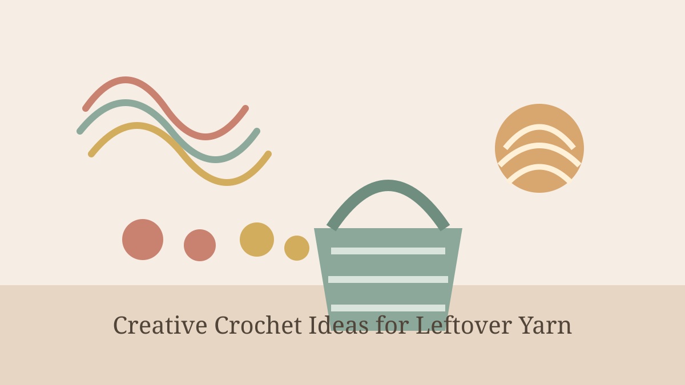

Scrap Yarn Crochet Projects: 12 Easy Ideas for Leftover Yarn
Small leftover balls and short yarn ends can still become something useful. With a little planning, scrap yarn crochet projects can turn a mixed stash into colorful home accessories, gifts and small decorations. These ideas are flexible, so you can adapt them to the amount and type of yarn you already have.

Before You Start: Sort Your Yarn Scraps
Group scraps by thickness, fiber and care instructions. Similar yarn weights are easier to combine because they are more likely to create an even fabric. If you mix very different yarns, use them in separate sections rather than forcing them into the same row. Check the yarn label when possible, and make a small test swatch.
12 Scrap Yarn Crochet Projects
1. Colorful Coasters
Use small amounts of cotton yarn to make square, round or flower-shaped coasters. Choose cotton when you want a washable, absorbent finish and keep the stitches firm so the coaster lies flat.
2. Granny Squares
Make individual squares from different colors, then join them into a cushion cover, tote panel or blanket. Our granny square tutorial can help if you are learning the basic shape.
3. Bookmarks
Long, narrow bookmarks are useful for small amounts of yarn. Try simple stripes, a flat chain-style design or a small flower at the top.
4. Mini Flowers and Leaves
Small appliqués are ideal for short lengths of yarn. Add them to bags, hats, gift wrapping or home decorations.
5. Keychain Decorations
Make a tiny heart, star or simple charm. Keep embellishments secure and avoid small detachable parts on items intended for young children.
6. Pom-Poms and Tassels
Leftover yarn can become pom-poms and tassels for bookmarks, gift tags and room décor. Use a consistent color palette for a coordinated look.
7. Scrunchies
Use a compatible soft yarn to crochet a cover around an elastic band. Avoid overly rough yarn that may snag hair or feel uncomfortable.
8. Mug Rugs
Make a slightly larger, flat version of a coaster. Cotton is often a practical choice, and a simple stitch pattern helps the piece sit evenly.
9. Patchwork Cushion Cover
Combine several squares or rectangles into a cushion front. Repeat two or three colors throughout to make a mixed stash look intentional.
10. Striped Scarf
Use longer leftovers for stripes. Keep the yarn weights similar so the scarf has a consistent thickness, and weave in ends securely.
11. Small Storage Basket
Use sturdier yarn scraps of similar thickness for a little basket. A firm stitch and a stable base help it hold its shape.
12. Amigurumi Accessories
Use small amounts of yarn for tiny bows, scarves, ears or other details on a larger handmade toy. Match the yarn weight to the original project where possible.
How to Make Leftover Yarn Projects Look Coordinated
- Choose a palette: Pick two or three colors and repeat them.
- Match thickness: Keep similar yarn weights together for an even result.
- Use texture thoughtfully: Combine smooth yarns with other smooth yarns, and reserve fluffy textures for accents.
- Check care labels: Do not combine yarns that need very different washing methods in one item.
- Weave in ends neatly: A tidy finish makes small projects look more polished. See our guide to weaving in crochet ends.
Frequently Asked Questions
What can I crochet with very small amounts of yarn?
Try flowers, leaves, bookmarks, small appliqués, tassels or colorful granny squares.
Can I mix different yarn weights?
You can, but the fabric may become uneven. For a consistent result, use similar weights together or place different weights in separate sections.
What is the best yarn for scrap crochet projects?
It depends on the item. Cotton is useful for coasters and mug rugs, while soft acrylic or wool blends may suit accessories. Always consider the pattern and care label.
Final Thoughts
Scrap yarn is an opportunity to make small, creative projects without buying a full new skein. Start by sorting your leftovers, choose a project that fits the amount you have, and keep yarn weight and care instructions in mind. Even the smallest scraps can add a thoughtful detail to your next crochet make.